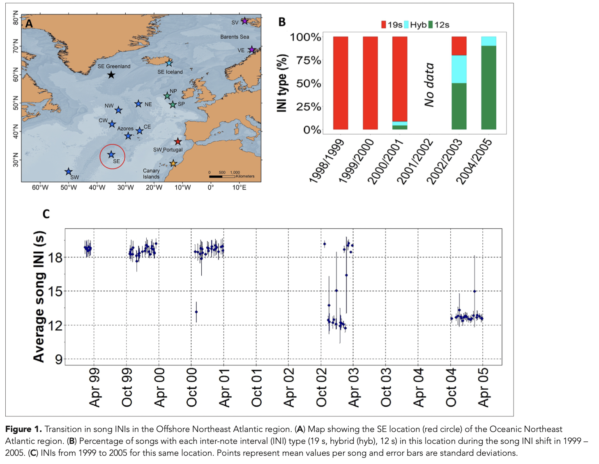
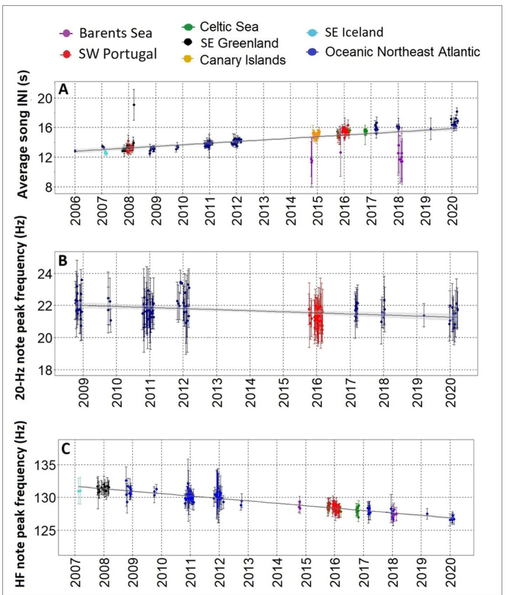
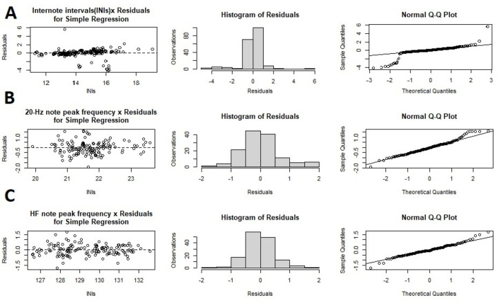

suppressPackageStartupMessages({ #ignore this initial function (performing this to hide loading messages from running project)
library(ggplot2)
library(dplyr)
library(RColorBrewer)
library(tibble)
library(ggpubr)
library(gridExtra)
library(FSA)
library(ggthemes)
if (!require("gplots", quietly = TRUE)) {
install.packages("gplots", dependencies = TRUE)
}
library(gplots)
if (!require("RColorBrewer", quietly = TRUE)) {
install.packages("RColorBrewer", dependencies = TRUE)
}
library(RColorBrewer)
library(dendextend)
library(grid)
library(gtable)
library(ggprism)
library(ggimage)
library(png)
library(curl)
})Replication Assignment
Introduction
Fin whales are one of the many species that produce songs, which are commonly used as acoustic courtship displays. These songs have the potential to change across both time and space, as a result of factors including cultural transmission, genetic drift, or adaptations to new environments. Although the evolution of songs has been thoroughly studied in songbirds, the mechanisms underlying fin whale song variations remain poorly understood. This paper examined alterations in three fin whale song characteristics over two decades in the North Atlantic Ocean (ONA), attempting to elucidate the patterns and factors that influence song evolution in fin whales.
Terms and Abbreviations:
INI (Inter-Note Interval): The duration separating successive notes in a whale’s song.
20-Hz Note: A common low-frequency noise (~20 Hz) in fin whales.
HF Note: A higher frequency note (~130 Hz) that may appear with the 20-Hz note.
SNR (Signal-to-Noise Ratio): An indicator of the clarity of signals in recordings.
EAR (Ecological Acoustic Recorder): A type of autonomous underwater recorder.
OBS (Ocean Bottom Seismometer): A device on the seafloor capable of capturing acoustic information.
ONA (Oceanic Northeast Atlantic): A region encompassing several recording locations in the study.
Methods
This paper collected acoustic recordings from 15 study sites across the central and eastern North Atlantic (1999-2020). Data gathering was focused on the known fin whale vocalization period (October to March) to account for seasonal changes. Recordings were then analyzed with Raven Pro 1.5 software to assess inter-note intervals (INIs) and peak frequencies of both the 20-Hz and HF notes. Only recordings of high quality with slight background noise and distinct note sequences were chosen for analysis. The temporal and spatial patterns in song features were analyzed in R.
Loading required packages
Special Case for “gganimate”: (according to research team)
# in order to install this final package, it's dependent on already having the packages "ggplot2", "gifski", and "transformr" installed
library(gifski)
library(transformr)
library(gganimate)
library(patchwork)Figure 1
Figure 1A
# loading the image (a screenshot i took)
download.file("https://raw.githubusercontent.com/carlyshea26/cshea26-AN588-Replication/main/img/fig1A.png",
"temp.png", mode = "wb")
img <- readPNG("temp.png")
xhat <- 0.58 # adjusting for right/left movement of my circle
yhat <- 0.17 # adjusting for up/down movement of my circle
# plotting a red circle to overlay the image to identify the coordinate of interest
img1a <- ggplot() +
annotation_custom(rasterGrob(img, width = unit(1, "npc"), height = unit(1, "npc"))) +
geom_point(aes(x = xhat, y = yhat), color = "red", size = 16, shape = 1, stroke = 1.5) +
theme_void() +
coord_fixed(xlim = c(0, 1.5), ylim = c(0, 1))
print(img1a)
🐋 Note about this figure
A Note: I somewhat cheated by inserting the screenshot provided by the initial research team — however, this figure is solely inserted to mimic the original paper’s figure one to the best of my ability.
Figure 1B
- loading CSV File Used for Figure 1B: Perc_SE_songs
- this CSV contains all the percentages of each INI (inter-note-interval) type from 1999 to 2005 at the southeast (SE) location of the Oceanic Northeast Atlantic (ONA) region
# figure 1B: INI percentage song type in South East location from the ONA region
perc_SE <- read.csv("https://raw.githubusercontent.com/carlyshea26/cshea26-AN588-Replication/main/DATA/Perc_SE_songs.csv", header = TRUE, dec = ".")
str(perc_SE)'data.frame': 18 obs. of 3 variables:
$ year: chr "1998/1999" "1999/2000" "2000/2001" "2001/2002" ...
$ perc: num 100 100 91.3 0 20 ...
$ INI : chr "19s" "19s" "19s" "19s" ...perc_SE$INI <- factor(perc_SE$INI, levels = c("19s", "Hyb", "12s"))
# note from the original creators to "make sure perc and Rythm are in the correct format" - but this is wrong (Ry)
perc_SE$perc <- as.numeric(perc_SE$perc)
perc_SE$INI <- factor(perc_SE$INI) # there is no no column in the file that has rhythm in it - this was potentially changed from Ry to INI
# there could be a relationship between INI and rhythm in this context (they very well could represent the same thing)...however... i think that this should be clearer either in their readme file or in their actual methods outlining how they analyzed this portion of their study via R
# why might we care? because i spent 2 hours trying to troubleshoot using the "Rhythm" variable when it simply did not exist in the original CSV file
perc <- ggplot(perc_SE, aes(fill=INI, y=perc, x=year)) +
geom_bar(position="fill", stat="identity", width=0.5) +
scale_y_continuous(name = "INI type (%)",labels = scales::percent_format()) +
theme_bw()+
theme(text=element_text(family = "Times"),panel.grid.major = element_blank(),
panel.grid.minor = element_blank(),
strip.text.x = element_text(size = 12, face="bold", margin = margin(0.5, 0, 0.5, 0, "cm")),
strip.background = element_rect(fill="grey97"),
axis.title = element_text(face="bold", size = 12),
axis.title.x = element_blank(),
axis.text.x = element_text(colour="black", size = 12, angle=60, vjust = 0.5, hjust=0.5),
axis.text.y = element_text(colour="black", size = 12), legend.position = "top",
legend.text=element_text(size=10), legend.title=element_blank()) +
labs(tag = "B") +
scale_fill_manual(values=c("red","cyan", "springgreen4")) +
#adding annotation for dashed line in 2001/2002 column
geom_segment(aes(x = which(perc_SE$year == "2001/2002")[1],
xend = which(perc_SE$year == "2001/2002")[1],
y = 0.01, yend = 0.99),
linetype = "dashed", color = "black") +
#adding annotation for "No Data" (attempting to center it)
annotate("text", x = which(perc_SE$year == "2001/2002")[1], y = 0.5,
label = "No Data", family = "Times", angle = 90, vjust = -0.5, hjust = .5, size = 4)
print(perc) #printing the figure (sanity check)
Figure 1C
- loading CSV File Used for Figure 1C: INI_ave_SE_99_05.csv
- this CSV contains all INI’s (inter-note-intervals) averaged by song collected from 1999 to 2005 at the SE location of the ONA region
bout9905 <- read.csv(file="https://raw.githubusercontent.com/carlyshea26/cshea26-AN588-Replication/main/DATA/INI_ave_SE_99_05.csv", header=TRUE, dec=".")
bout9905$date <- as.Date(bout9905$date, format = "%d/%m/%Y")
str(bout9905$date) # ensuring we now have the date format Date[1:94], format: "1999-02-11" "1999-02-19" "1999-02-21" "1999-02-26" "1999-03-02" ...head(bout9905$date) # printing data to see how it looks [1] "1999-02-11" "1999-02-19" "1999-02-21" "1999-02-26" "1999-03-02"
[6] "1999-03-08"# also part of figure 1C (INI's collected from 1999 to 2005 from the ONA region)
ini_b_9905 <- ggplot(bout9905, aes(x = date, y = Ave_INI)) + # plotting date against average INI for the ONA region
geom_point(size=2, aes(group=1), color="darkblue")+
geom_errorbar(aes(ymin=Ave_INI-SD_INI, ymax=Ave_INI+SD_INI),width=2, color="darkblue") +
scale_y_continuous(name = "Average song INI (s)",
limits=c(9, 20), guide = guide_prism_minor()) + theme_bw() + labs(tag = "C") + # setting limits so that my figure doesn't look crazy
scale_x_date(breaks="6 month", date_labels="%b %y")
# formatting axes titles and plot details
ini_b_9905 <- ini_b_9905 + theme(plot.title = element_text(size = 18, family = "Times", face = "bold"),
text=element_text(family = "Times"),panel.grid.major.y = element_line(colour="black", linetype=2),
panel.grid.minor = element_blank(), panel.grid.major.x = element_line(colour="black", linetype=2), strip.text.x = element_text(size = 10, face="bold", margin = margin(0.5, 0, 0.5, 0, "cm")),
strip.background = element_rect(fill="grey97"),
axis.title = element_text(face="bold", size = 12),
axis.title.x = element_blank(),
axis.text.x = element_text(colour="black", size = 10, vjust=0.5, angle=90),
axis.text.y = element_text(colour="black", size = 10), legend.position = "top",
legend.text=element_text(size=10), legend.title=element_blank())
print(ini_b_9905)
Putting It All Together
# arranging figure 1 sections A-C to compare to the actual study's figure 1
grid.arrange(
arrangeGrob(img1a, perc, ncol = 2),
ini_b_9905,
nrow = 2,
heights = c(1, 0.8)
)
🐋 CLICK HERE To View Figure One from the Paper for a Comparison
Figure 1 (A-C) As Shown in the Paper

Comments Regarding Figure 1:
- Researchers tried to run this model using a column title called “perc_SEdollarsignRythm”, which does not exist and is not found anywhere else in the above code. I renamed this to the column “perc_SEdollarsignINI”, which still properly mirrors the 1B figure in the original paper
- I believe this was just a naming mishap that could have arisen from their end, but I should have been more diligent about checking the CSV file first
Figure 3
- Observing gradual changes in song INIs and notes frequencies
Figure 3A:
- loading CSV File Used for Figure 1C: INI_ave_06_20.csv
- this CSV contains all contains all INI’s (inter-note-intervals) averaged by song collected from 2006 to 2020 and sorted by location, region and year
# figure 3A: sorted INI gradient from 2006 to 2020 for all locations and regions
bout0620 <- read.csv(file="https://raw.githubusercontent.com/carlyshea26/cshea26-AN588-Replication/main/DATA/INI_ave_06_20.csv", header=TRUE, dec=".")
bout0620$date <- as.Date(bout0620$date, format = "%d/%m/%Y")
ini_b_0620 <- ggplot(bout0620, aes(x = date, y = Ave_INI, color= Region)) +
geom_point(size=2, aes(group=1))+
geom_errorbar(aes(ymin=Ave_INI-SD_INI, ymax=Ave_INI+SD_INI),width=30) +
annotate("text", x = min(bout0620$date), y = 21, label = "A", fontface = "bold", size = 6) +
scale_y_continuous(name = "Average song INI (s)",
limits=c(7.8, 21.5), guide = guide_prism_minor()) +
theme_bw() +
scale_x_date (breaks="1 year", date_labels="%Y")+
theme(plot.title = element_text(size = 15, family = "Times", face = "bold"),
text=element_text(family = "Times"),panel.grid.major.y = element_line(colour="black", linetype=2),
panel.grid.minor = element_blank(),panel.grid.major.x = element_line(colour="black", linetype=2),
strip.text.x = element_text(size = 15, face="bold", margin = margin(0.5, 0, 0.5, 0, "cm")),
strip.background = element_rect(fill="grey97"),
axis.title.y = element_text(colour="black", size = 15, face="bold"),
axis.title.x = element_blank(),
axis.text.x = element_text(colour="black", size = 15, vjust=0.5, angle=90),
axis.text.y = element_text(colour="black", size = 15), legend.position = "top",
legend.text=element_text(size=15), legend.title=element_blank())+
scale_color_manual(values=c("darkviolet","darkorange","green4", "black","turquoise","darkblue","red" )) +
#facet_grid(~year3, scale="free_x")
stat_smooth( method = "glm",aes(group=1), colour = "black", fill= "grey", size=0.5)
print(ini_b_0620)`geom_smooth()` using formula = 'y ~ x'
Figure 3B:
- loading CSV File Used for Figure 1C: 20Hz_ave_EARs.csv
- this CSV contains all contains all INI’s (inter-note-intervals) averaged by song collected from 2006 to 2020 and sorted by location, region and year
# figure 3B: gradient of the peak frequency of the 20Hz only for EAR data
EARs <- subset(bout0620, Location == "Azores" | Location == "Gorringe")
EARs <- read.csv(file = "https://raw.githubusercontent.com/carlyshea26/cshea26-AN588-Replication/main/DATA/20Hz_ave_EARs.csv", header = TRUE, dec = ".")
EARs$date <- as.Date(EARs$date, format = "%d/%m/%Y")
freq20_b_EAR <- ggplot(EARs, aes(x = date, y = Ave_PF, color = Region)) +
geom_point(size = 2, aes(group = 1)) +
geom_errorbar(aes(ymin = Ave_PF - SD_PF, ymax = Ave_PF + SD_PF), width = 30) +
annotate("text", x = min(bout0620$date), y = 24.6, label = "B", fontface = "bold", size = 6) +
scale_y_continuous(name = "20-Hz note peak frequency (Hz)", limits = c(18, 25)) +
theme_bw() +
scale_x_date(breaks = "1 year", date_labels = "%Y") +
theme(
plot.title = element_text(size = 18, family = "Times", face = "bold"),
text = element_text(family = "Times"),
panel.grid.major.y = element_line(colour = "black", linetype = 2),
panel.grid.minor = element_blank(),
panel.grid.major.x = element_line(colour = "black", linetype = 2),
strip.text.x = element_text(size = 18, face = "bold", margin = margin(0.5, 0, 0.5, 0, "cm")),
strip.background = element_rect(fill = "grey97"),
axis.title = element_text(face = "bold", size = 20),
axis.title.x = element_blank(),
axis.text.x = element_text(colour = "black", size = 20, vjust = 0.5, angle = 90),
axis.text.y = element_text(colour = "black", size = 20),
legend.position = "top",
legend.text = element_text(size = 16),
labs(tag = "A"),
legend.title = element_blank()
) +
scale_color_manual(values = c("red", "darkblue")) +
stat_smooth(method = "glm", aes(group = 1), colour = "black", fill = "grey", linewidth = 0.5)
print(freq20_b_EAR)`geom_smooth()` using formula = 'y ~ x'
Figure 3C:
- loading CSV File Used for Figure 1C: HF_ave.csv
- this CSV contains peak frequencies of the high frequency (HF) note averaged by song (also includes standard deviations sorted by location, region and year).
# figure 3C:
HF <- read.csv(file="https://raw.githubusercontent.com/carlyshea26/cshea26-AN588-Replication/main/DATA/HF_ave.csv", header=TRUE, dec=".")
HF$date <- as.Date(HF$date, format = "%d/%m/%Y")
HF_b <- ggplot(HF, aes(x = date, y = Ave_PF, color= Region)) +
geom_point(size=2, aes(group=1))+
geom_errorbar(aes(ymin=Ave_PF-SD_PF, ymax=Ave_PF+SD_PF),width=30) +
annotate("text", x = min(HF$date), y = 136.75 , label = "C", fontface = "bold", size = 6) +
scale_y_continuous(name = "HF note peak frequency (Hz)",
limits=c(122, 138)) +
theme_bw() +
scale_x_date(breaks="1 year", date_labels="%Y") +
theme(plot.title = element_text(size = 16, family = "Times", face = "bold"),
text=element_text(family = "Times"),panel.grid.major.y = element_line(colour="black", linetype=2),
panel.grid.minor = element_blank(),panel.grid.major.x = element_line(colour="black", linetype=2),
strip.text.x = element_text(size = 12, face="bold", margin = margin(0.5, 0, 0.5, 0, "cm")),
strip.background = element_rect(fill="grey97"),
axis.title = element_text(face="bold", size = 12),
axis.title.x = element_blank(),
axis.text.x = element_text(colour="black", size = 12, vjust=0.5, angle=90),
axis.text.y = element_text(colour="black", size = 12), legend.position = "top",
legend.text=element_text(size=12), legend.title=element_blank()) +
scale_color_manual(values=c("darkviolet", "red", "green4","black","turquoise", "darkblue")) +
#facet_grid(~year2, scale="free_x")
stat_smooth(method = "glm",aes(group=1), colour = "black", fill= "grey", lwd=0.5)
print(HF_b)`geom_smooth()` using formula = 'y ~ x'
🐋 CLICK HERE To View Figure Three from the Paper for a Comparison
Figure 3 (A-C) As Shown in the Paper

Comments Regarding Figure 3:
- I didn’t run into any errors with trying to run the code to generate these figures and the repetition for running these three made it easier for me to base 3B and 3C directly from the code that I generated for Figure 3A.
- Still working through how to change the width of my plots within R Markdown but overall I am very happy with how these figures compare to those in the paper itself!
Supplemental Figure 1
Linear Models / Model Validation
- I went though and performed a really simple linear regression using the lm() function.
CSVs Used for Supplemental Figure 1:
- “INI_ave_06_20.csv”: contains all INIs averaged by song collected from 2006 to 2020 and sorted by location, region and year
- “20Hz_ave_EARs.csv”: contains INIs and peak frequencies of the 20-Hz note averaged by song (or day) and its standard deviations sorted by location, region and year recorded only with Ecologic Acoustic Recorders (EARs)
- “HF_ave.csv”: contains peak frequencies of the high frequency (HF) note averaged by song (or day) and its standard deviations sorted location, region and year
# model validation figures (figure 3 - supplemental figure 1)
fig_3_1 <- par(mfrow = c(3, 3))
INI_lm <- read.csv(file="https://raw.githubusercontent.com/carlyshea26/cshea26-AN588-Replication/main/DATA/INI_ave_06_20.csv", header=TRUE, dec=".")
LM_ini <- lm(Ave_INI ~ year, data=INI_lm)
# spend x residuals plot
plot(LM_ini$resid~INI_lm$Ave_INI[order(INI_lm$Ave_INI)],
main="Internote intervals(INIs)x Residuals\nfor Simple Regression",
xlab="INIs", ylab="Residuals")
abline(h=0,lty=2)
# histogram of residuals
hist(LM_ini$resid, main="Histogram of Residuals", xlab="Residuals",
ylab="Observations")
# Q-Q Plot
qqnorm(LM_ini$resid)
qqline(LM_ini$resid)
# repeating this process for the 20 Hz note frequencies
EAR <- read.csv(file="https://raw.githubusercontent.com/carlyshea26/cshea26-AN588-Replication/main/DATA/20Hz_ave_EARs.csv", header=TRUE, dec=".")
LM_20_EAR <- lm(Ave_PF ~ year, data=EAR)
summary(LM_20_EAR)
Call:
lm(formula = Ave_PF ~ year, data = EAR)
Residuals:
Min 1Q Median 3Q Max
-1.29695 -0.43743 -0.04964 0.34277 1.61369
Coefficients:
Estimate Std. Error t value Pr(>|t|)
(Intercept) 151.87935 29.07868 5.223 6.74e-07 ***
year -0.06466 0.01444 -4.477 1.63e-05 ***
---
Signif. codes: 0 '***' 0.001 '**' 0.01 '*' 0.05 '.' 0.1 ' ' 1
Residual standard error: 0.6264 on 131 degrees of freedom
Multiple R-squared: 0.1327, Adjusted R-squared: 0.1261
F-statistic: 20.04 on 1 and 131 DF, p-value: 1.631e-05# spend x residuals plot
plot(LM_20_EAR$resid ~ EAR$Ave_PF[order(EAR$Ave_PF)],
main="20-Hz note peak frequency x Residuals\nfor Simple Regression",
xlab="INIs", ylab="Residuals")
abline(h=0,lty=2)
# histogram of residuals
hist(LM_20_EAR$resid, main="Histogram of Residuals", xlab="Residuals",
ylab="Observations")
# Q-Q Plot
qqnorm(LM_20_EAR$resid)
qqline(LM_20_EAR$resid)
HF_lm <- read.csv(file="https://raw.githubusercontent.com/carlyshea26/cshea26-AN588-Replication/main/DATA/HF_ave.csv", header=TRUE, dec=".")
HF_LM <- lm(Ave_PF ~ year, data=HF_lm)
plot(HF_LM$resid~HF_lm$Ave_PF[order(HF_lm$Ave_PF)], #originally had this as Ave_peak_frequency - this is not the column title in their CV (CV column= Ave_PF)
main="HF note peak frequency x Residuals\nfor Simple Regression",
xlab="INIs", ylab="Residuals")
abline(h=0,lty=2)
# Histogram of Residuals
hist(HF_LM$resid, main="Histogram of Residuals", xlab="Residuals",
ylab="Observations")
# Q-Q Plot
qqnorm(HF_LM$resid)
qqline(HF_LM$resid)
print(fig_3_1)$mfrow
[1] 1 1🐋 CLICK HERE for a Comparison to the Paper’s Figure
A Quick Look at the Original Paper’s Figure:

From how they both compare side by side, my plot vs. the plot featured in the paper appear very similar. I didn’t have a lot of issues with this step as it was just a combination of histograms, q-q plots, and regressions.
Figure 4
- loading CSV file used for Figure 4B: INI_all.csv
- this CSV contains all INI’s measured from 1999 to 2020 and sorted by location, region and year
# figure 4: histograms of all INI measurements from the same singing season, for the actual individual graphs please click on the drop-down below this chunk!
ini_all<-read.csv(file="https://raw.githubusercontent.com/carlyshea26/cshea26-AN588-Replication/main/DATA/INI_all.csv", header=TRUE, dec=".")
#2006/2007
ini0607<-subset(ini_all, year2=="2006/2007")
ini0607_g <- ggplot(ini0607, aes(INI, fill=Region)) +
geom_histogram(color="black", alpha=0.5, bins=50) +
theme_bw() +
theme(panel.grid.major = element_blank(),
panel.grid.minor = element_blank(),
plot.title = element_text(size = 18, family = "Times", face = "bold"),
text=element_text(family = "Times"),
axis.title = element_text(face="bold", size = 12),
axis.title.y = element_blank(),
axis.title.x=element_blank(),
axis.text.x = element_text(colour="black", size = 12),
axis.text.y = element_text(colour="black", size = 12), legend.position = "top",
legend.text=element_text(size=12), legend.title=element_blank()) +
scale_x_continuous(limits=c(6,20)) +
scale_fill_manual(values=c("turquoise", "darkblue"))
#2007/2008
ini0708<-subset(ini_all, year2=="2007/2008")
ini0708_g <- ggplot(ini0708, aes(INI, fill=Region)) +
geom_histogram(color="black", alpha=0.5, bins=50) +
theme_bw() +
theme(panel.grid.major = element_blank(),
panel.grid.minor = element_blank(),
plot.title = element_text(size = 18, family = "Times", face = "bold"),
text=element_text(family = "Times"),
axis.title = element_text(face="bold", size = 20),
axis.title.y = element_blank(),
axis.title.x=element_blank(),
axis.text.x = element_text(colour="black", size = 12),
axis.text.y = element_text(colour="black", size = 12), legend.position = "top",
legend.text=element_text(size=12), legend.title=element_blank()) +
scale_x_continuous(limits=c(6,20)) +
scale_fill_manual(values=c("black", "darkblue","red"))
#2014/2015
ini1415<-subset(ini_all, year2=="2014/2015")
ini1415_g <- ggplot(ini1415, aes(INI, fill=Region)) +
geom_histogram(color="black", alpha=0.5, bins=30) +
theme_bw() +
theme(panel.grid.major = element_blank(),
panel.grid.minor = element_blank(),
plot.title = element_text(size = 18, family = "Times", face = "bold"),
text=element_text(family = "Times"),
axis.title = element_text(face="bold", size = 20),
axis.title.y = element_blank(),
axis.title.x=element_blank(),
axis.text.x = element_text(colour="black", size = 12),
axis.text.y = element_text(colour="black", size = 12), legend.position = "top",
legend.text=element_text(size=12), legend.title=element_blank()) +
scale_fill_manual(values=c("darkviolet", "darkorange")) +
scale_x_continuous(limits=c(6,20)) +
scale_y_continuous(name = "Count")
#2015/2016
ini1516<-subset(ini_all, year2=="2015/2016")
ini1516_g <- ggplot(ini1516, aes(INI, fill=Region)) +
geom_histogram(color="black", alpha=0.5, bins=50) +
theme_bw() +
theme(panel.grid.major = element_blank(),
panel.grid.minor = element_blank(),
plot.title = element_text(size = 18, family = "Times", face = "bold"),
text=element_text(family = "Times"),
axis.title = element_text(face="bold", size = 20),
axis.title.y = element_blank(),
axis.title.x=element_blank(),
axis.text.x = element_text(colour="black", size = 12, vjust=0.5),
axis.text.y = element_text(colour="black", size = 12), legend.position = "top",
legend.text=element_text(size=12), legend.title=element_blank()) +
scale_x_continuous(limits=c(6,20)) +
scale_fill_manual(values=c("darkviolet", "green4", "red"))
#2016/2017
ini1617<-subset(ini_all, year2=="2016/2017")
ini1617_g <- ggplot(ini1617, aes(INI, fill=Region)) +
geom_histogram(color="black", alpha=0.5, bins=50) +
theme_bw() +
theme(panel.grid.major = element_blank(),
panel.grid.minor = element_blank(),
plot.title = element_text(size = 18, family = "Times", face = "bold"),
text=element_text(family = "Times"),
axis.title = element_text(face="bold", size = 20),
axis.title.y = element_blank(),
axis.title.x=element_blank(),
axis.text.x = element_text(colour="black", size = 12, vjust=0.5),
axis.text.y = element_text(colour="black", size = 12), legend.position = "top",
legend.text=element_text(size=12), legend.title=element_blank()) +
scale_x_continuous(limits=c(6,20)) +
scale_fill_manual(values=c("green4", "darkblue"))
#2017/2018
ini1718<-subset(ini_all, year2=="2017/2018")
ini1718_g <- ggplot(ini1718, aes(INI, fill=Region)) +
geom_histogram(color="black", alpha=0.5, bins=50) +
theme_bw() +
theme(panel.grid.major = element_blank(),
panel.grid.minor = element_blank(),
plot.title = element_text(size = 18, family = "Times", face = "bold"),
text=element_text(family = "Times"),
axis.title = element_text(face="bold", size = 20),
axis.title.y = element_blank(),
axis.title.x=element_blank(),
axis.text.x = element_text(colour="black", size = 12),
axis.text.y = element_text(colour="black", size = 12), legend.position = "top",
legend.text=element_text(size=12), legend.title=element_blank()) +
scale_x_continuous(limits=c(6,20)) +
scale_fill_manual(values=c( "darkviolet", "darkblue"))🐋 CLICK HERE To View The Individual Histograms
Figure 4 Histograms:
print(ini0607_g) #2006/2007
print(ini0708_g) #2007/2008
print(ini1415_g) #2014/2015
print(ini1516_g) #2015/2016
print(ini1617_g) #2016/2017
print(ini1718_g) #2017/2018
Combining All Histograms Together In Single Plot
ggarrange(ini0607_g, ini0708_g, ini1415_g, ini1516_g, ini1617_g, ini1718_g,
ncol = 2, nrow = 3,
align = "v", # allows you to align this vertically
labels = NULL,
heights = c(1, 1, 1))
🐋 CLICK HERE To View Figure 4B’s Histograms
- loading CSV file used for Figure 4B: HF_all.csv
- this CSV contains all measurements of the higher frequency (HF) note peak frequencies sorted by location, region and year
#Fig 4B: histograms of all peak frequencies of the HF note from the same singing season
hf_all <- read.csv(file="https://raw.githubusercontent.com/carlyshea26/cshea26-AN588-Replication/main/DATA//HF_all.csv", header=TRUE, dec=".")
#2015/2016
hf1516 <- subset(hf_all, year2=="2015/2016") #wrong column labeled in original datafile
hf1516_g <- ggplot(hf1516, aes(Peak_Freq, fill=Region)) +
geom_histogram(color="black", alpha=0.5, bins=18) +
theme_bw() +
theme(panel.grid.major = element_blank(),
panel.grid.minor = element_blank(),
plot.title = element_text(size = 18, family = "Times", face = "bold"),
text=element_text(family = "Times"),
axis.title = element_text(face="bold", size = 20),
axis.title.y = element_blank(),
axis.title.x=element_blank(),
axis.text.x = element_text(colour="black", size = 20),
axis.text.y = element_text(colour="black", size = 20), legend.position = "none",
legend.text=element_text(size=20), legend.title=element_blank()) +
scale_x_continuous(limits=c(120,135)) +
scale_fill_manual(values=c("darkviolet","red","green4"))
hf1516_g
#2016/2017
hf1617 <- subset(hf_all, year2=="2016/2017")
hf1617_g <- ggplot(hf1617, aes(Peak_Freq, fill=Region)) +
geom_histogram(color="black", alpha=0.5, bins=15) +
theme_bw() +
theme(panel.grid.major = element_blank(),
panel.grid.minor = element_blank(),
plot.title = element_text(size = 18, family = "Times", face = "bold"),
text=element_text(family = "Times"),
axis.title = element_text(face="bold", size = 20),
axis.title.y = element_blank(),
axis.title.x=element_blank(),
axis.text.x = element_text(colour="black", size = 20, vjust=0.5),
axis.text.y = element_text(colour="black", size = 20), legend.position = "none",
legend.text=element_text(size=20), legend.title=element_blank()) +
scale_x_continuous(limits=c(120,135)) +
scale_fill_manual(values=c("green4", "blue"))
hf1617_g
#2017/2018
hf1718 <- subset(hf_all, year2=="2017/2018")
hf1718_g <- ggplot(hf1718, aes(Peak_Freq, fill=Region)) +
geom_histogram(color="black", alpha=0.5, bins=15) +
theme_bw() +
theme(panel.grid.major = element_blank(),
panel.grid.minor = element_blank(),
plot.title = element_text(size = 18, family = "Times", face = "bold"),
text=element_text(family = "Times"),
axis.title = element_text(face="bold", size = 20),
axis.title.y = element_blank(),
axis.title.x=element_blank(),
axis.text.x = element_text(colour="black", size = 20, vjust=0.5),
axis.text.y = element_text(colour="black", size = 20), legend.position = "none",
legend.text=element_text(size=20), legend.title=element_blank()) +
scale_x_continuous(limits=c(120,135)) +
scale_fill_manual(values=c("darkviolet", "blue"))
hf1718_g
grid.arrange(hf1516_g, hf1617_g, hf1718_g,
ncol = 1,
widths = 2,
heights = c(2, 2, 2))
Wilcox Pairwise Comparisons
- basically the non-parametric version of the two-sample t-test
Testing OBS (ocean bottom seismometer) vs. EARS (Ecologic Acoustic Recorders): - loading CSV File Used for the Wilcox Test: test_ear_obs.csv - this CSV contains measurements of INIs and peak frequencies of the 20-Hz note from the same song recorded by an EAR and and OBS (to perform a Wilcox test pariwise comparison)
# wilcox test for pairwise comparisons
library (coin)Loading required package: survivallibrary(rstatix) #loading required packages
Attaching package: 'rstatix'The following objects are masked from 'package:coin':
chisq_test, friedman_test, kruskal_test, sign_test, wilcox_testThe following object is masked from 'package:stats':
filtertest <- read.csv(file="https://raw.githubusercontent.com/carlyshea26/cshea26-AN588-Replication/main/DATA/test_ear_obs.csv", header=TRUE, dec=".") #loading data
median(test$INI_ear) [1] 16.42median (test$INI_obs)[1] 16.527median(test$Peak_freq_ear)[1] 23.4median (test$Peak_freq_obs) #looking at medians for the populations studied[1] 21.1ini_test <- wilcox.test(test$INI_ear, test$INI_obs, paired=TRUE)
ini_test
Wilcoxon signed rank test with continuity correction
data: test$INI_ear and test$INI_obs
V = 11605, p-value = 0.4703
alternative hypothesis: true location shift is not equal to 0freq_test <- wilcox.test(test$Peak_freq_ear, test$Peak_freq_obs, paired=TRUE)
freq_test
Wilcoxon signed rank test with continuity correction
data: test$Peak_freq_ear and test$Peak_freq_obs
V = 16419, p-value < 2.2e-16
alternative hypothesis: true location shift is not equal to 0Interpretation: The alternative hypothesis mentioned here is stated as “true location shift is not equal to 0”, which means that the distribution of one population is shifted left/right (signifies different medians). From this information, we can see that there is a significant difference in peak frequency observations (p-value < 2.2e-16) but no significant difference in inter-note intervals (INIs) (p-value = 0.4703) between recordings made by either EARS and OBS devices. One possible explanation from these results may be that while both devices capture similar temporal patterns (INI), they may differ in how they record frequency related information.
Supplemental Figure 2
- Extension of Figure 3: Averaged peak frequencies of the 20-Hz notes per song from all data
- loading CSV File Used for Figure Supplement 2: PF_ave_all.csv
- this CSV contains all 20-Hz note peak frequency measurements averaged per song (or day) and its standard deviations sorted location, region and year
# averaged peak frequencies of the 20-Hz notes per song (from all data)
bout99 <- read.csv(file="https://raw.githubusercontent.com/carlyshea26/cshea26-AN588-Replication/main/DATA/PF_ave_all.csv", header=TRUE, dec=".")
bout99$date <- as.Date(bout99$date, format = "%d/%m/%Y")
freq20_b <- ggplot(bout99, aes(x = date, y = Ave_PF, color = Region, shape = Recorder)) +
geom_point(size = 2, bg = "black", lwd = 2, aes(group = 1)) +
geom_errorbar(aes(ymin = Ave_PF - SD_PF, ymax = Ave_PF + SD_PF), width = 30) +
scale_y_continuous(name = "Average song \n20-Hz note peak frequency (Hz)",
limits = c(18, 27)) +
scale_x_date(breaks = "1 year", date_labels = "%Y") +
scale_color_manual(values = c("darkviolet", "darkorange", "green4", "black", "red", "turquoise", "darkblue")) +
theme_bw() +
theme(
plot.title = element_text(size = 12, family = "Times", face = "bold"),
text = element_text(family = "Times"),
panel.grid.major.y = element_line(colour = "black", linetype = 2),
panel.grid.minor = element_blank(),
panel.grid.major.x = element_line(colour = "black", linetype = 2),
strip.text.x = element_text(size = 12, face = "bold",
margin = margin(0.5, 0, 0.5, 0, "cm")),
strip.background = element_rect(fill = "grey97"),
axis.title = element_text(face = "bold", size = 12),
axis.title.x = element_blank(),
axis.text.x = element_text(colour = "black", size = 12,
vjust = 0.5, angle = 90),
axis.text.y = element_text(colour = "black", size = 12),
legend.position = "bottom",
legend.box = "horizontal",
legend.box.just = "center",
legend.text = element_text(size = 10),
legend.title = element_blank(),
legend.spacing.x = unit(0.3, 'cm'),
legend.spacing.y = unit(0.2, 'cm')
) +
guides(
color = guide_legend(nrow = 3, byrow = TRUE, override.aes = list(size = 3)),
shape = guide_legend(nrow = 1, override.aes = list(size = 3))
)
print(freq20_b)
Results/Conclusions
In the first decade following initial data collection, researchers observed gradual shifts in inter-note intervals (INIs) and peak frequencies of both the 20-Hz and HF notes, indicating continued song evolution. In short, the key takeaway from this paper is that the combination of both gradual and rapid changes in song parameters across the central and eastern North Atlantic provides compelling evidence for vocal learning in fin whales!
My Takeaways
Overall this code was easy to follow in order to create the figures for this paper. The README file was very organized and I really appreciated how the research team defined all of the csv files used alongside each of the columns within the files.